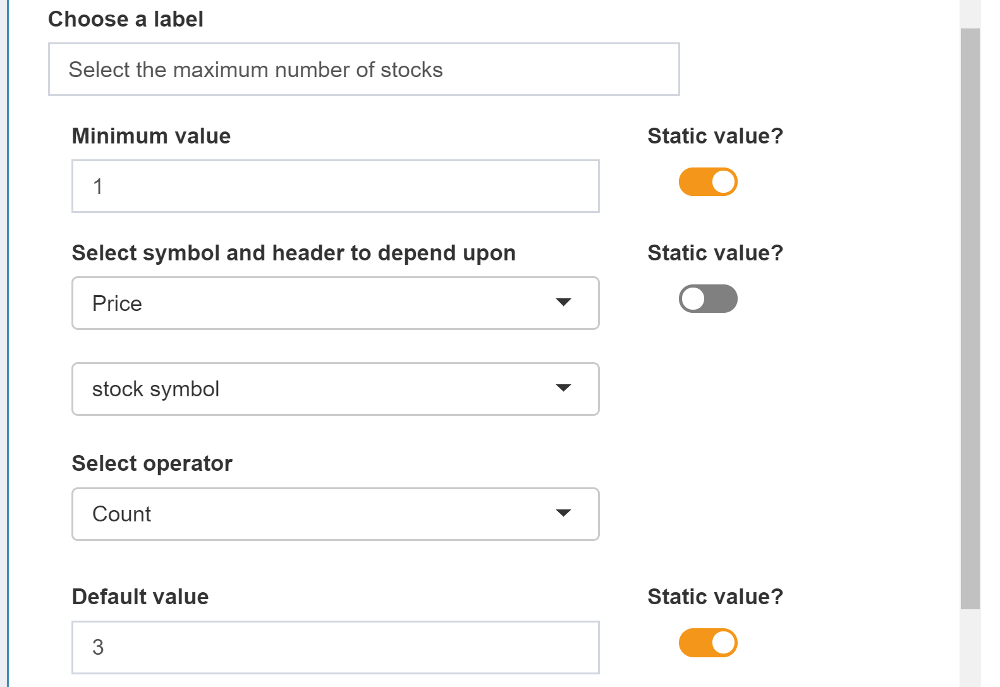
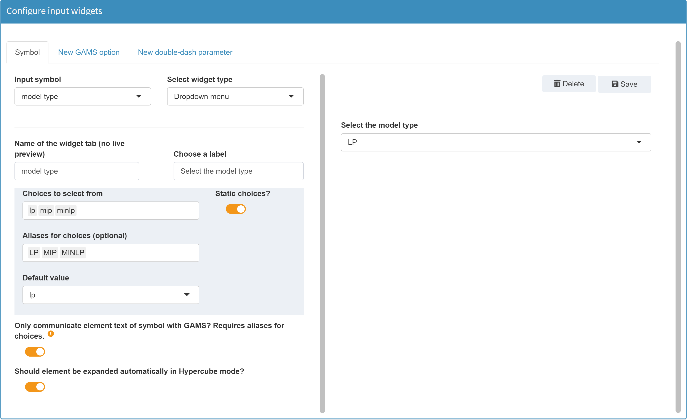
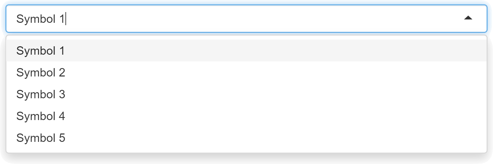
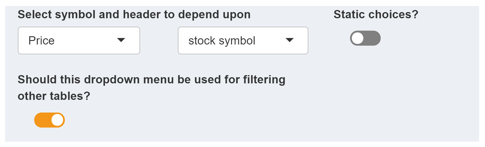
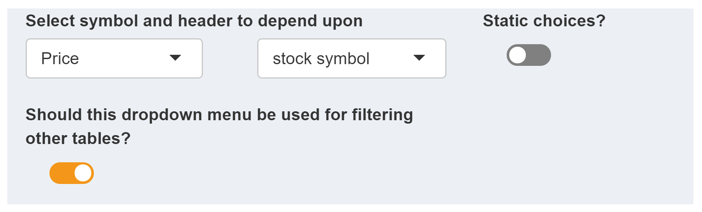
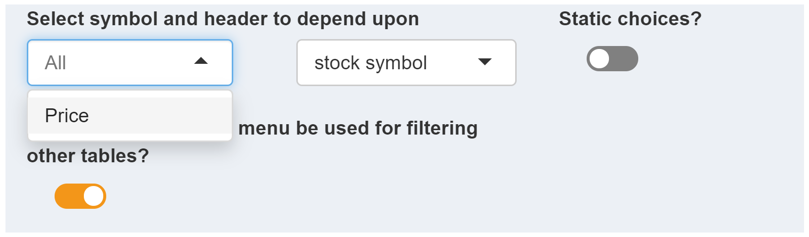
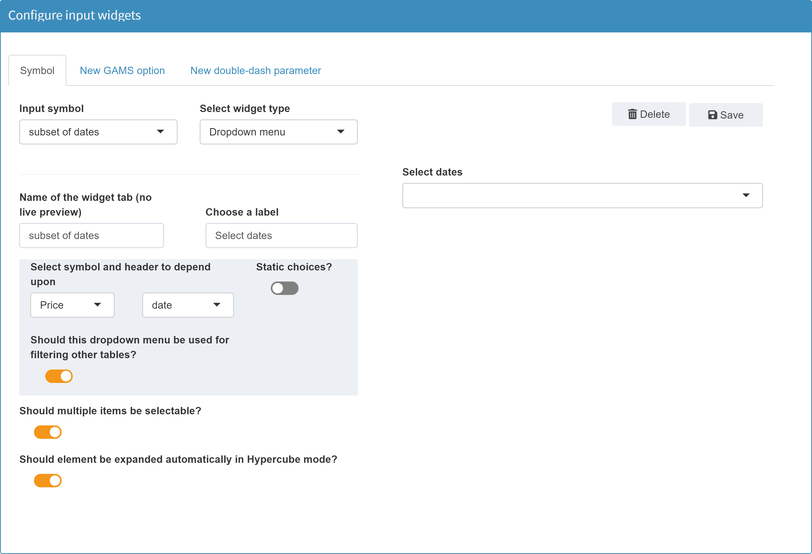
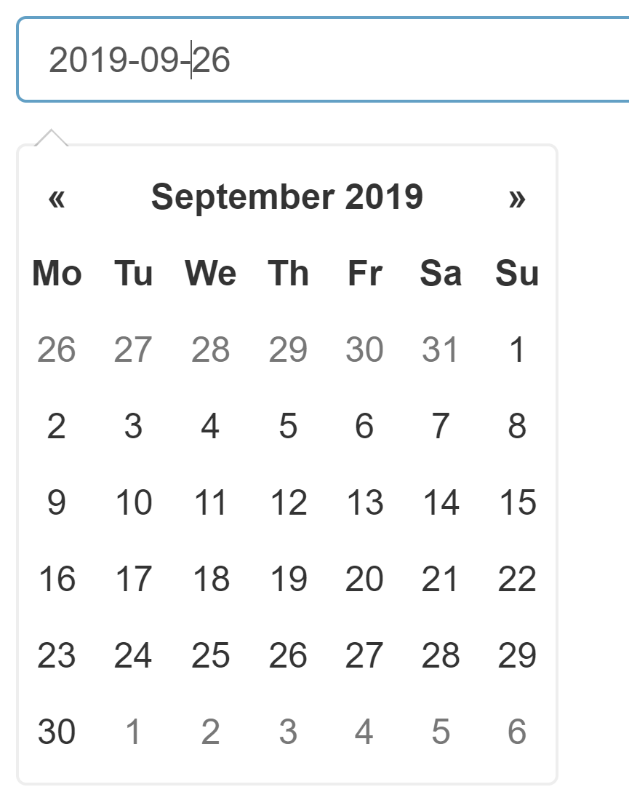
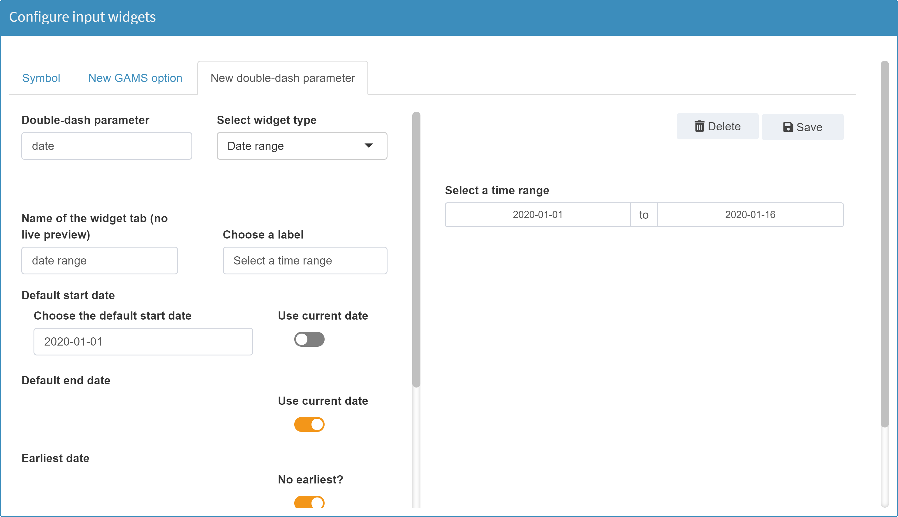

If all scalar widgets are displayed in the same tab (see aggregate widgets in the general options), then the name specified here is not displayed at all.
Widgets
Slider
Configuration
Sliders are useful in situations where the user has to select a numeric value from a range.
Example:

Available Options
The following options are available for a slider widget:
+ Enter the element name as it should be displayed in a tab
+ Choose a label
If a label has been specified, it will be displayed above the slider. In the example below the label select the maximum number of stocks is used. A label is optional.

+ Minimum / maximum / default value
Minimum / maximum value: Both a minimum and a maximum value are required for a slider. These limit the range in which the user can select values.
Default value: A default value is the initial value of the slider i.e. the slider value set when starting the application. This is optional.
A warning will be issued if the value doesn't fit between the minimum and maximum value.
If this value is not specified, the configured minimum value is always used as default value. As soon as data is loaded which contains a value for the slider symbol, the default value is replaced with this value.
All three values can be set either statically or dynamically. A static value always remains unchanged. If the desired slider does not change with changing data sets, it is a good idea to configure it as a slider with static values This means, for example, that the lower and upper limits of a sliders are always 1 and 10. Scenario data do not change these values.

Dynamic limits:
In many cases it makes sense to assign the limits and default values of a slider not with static but with dynamic values. This is done, for example, in the demo model pickstock.
Here, two sliders are used. In the first one the maxmimum number of stocks can be selected, in the second one the number of training days.

In both sliders, the maximum value results from the input data of the parameter price.

The maximum value for the maximum number of stocks is 30, because the used data set price contains 30 stocks. If the user deletes e.g. all values of the stock AAPL from the data, the maximum value of the slider changes dynamically to 29.
The same is true for the second slider for the number of training days. Here the maximum value of 252 results from the number of available dates in price.
In configuration mode we can easily set such dynamic limits. For the first slider the configuration looks like this:

The Static value? box was unchecked for the maximum value. Since the maximum slider value should result from the data of the symbol price, it is selected with the corresponding header stock symbol in which the stocks are contained (see table above). The operator is set to count since we want to count all stock symbols in our data to set the maximum value.
For the calculation of such limits from the data, the following operators are available:

More on Dependencies among Widgets can be found here.
+ Step size
+ Minimum step size
The minimum step size defines the minimum interval that can be used for scenario creation in Hypercube mode for a sliderrange.

In Hypercube mode, when a slider range is used, scenarios are generated depending on the specified step size. Example: We configure a single slider with a lower bound of 70, an upper bound of 100 and a step size of 5. In the Hypercube mode this single slider becomes a slider range with the same limits and the same step size. In the image below the selected limits of 75 to 90 and a step size of 5 result in 4 different variants (75, 80, 85, 90), i.e. 4 scenarios to be calculated.

The minimum step size sets the minimum value the user can specify as step size in Hypercube mode. The value may be lower than the regular step size. For example, if the slider above is configured with a regular step size of 5, the limits of the slider can be set in increments of 5. However, the step size for scenario generation on the right side can differ, e.g. be set in smaller intervals. If set to 1, for example, this would result in 16 scenarios (75, 76, 77, ..., 89, 90).

Note:
The minimum step size is only relevant in Hypercube mode.
+ Sow tick marks?
Tick marks are displayed below the sliders and help to visually subdivide the entire slider width.
Slider without tick marks:
Slider with tick marks:

+ Should element be expanded automatically in Hypercube mode?
As explained in detail in the corresponding section on Hypercube mode, the display of configured widgets changes in Hypercube mode. With the option available here, the automatic expansion of a widget can be switched off.

JSON example
Slider with dynamic upper bound.
{
"inputWidgets": {
"maxstock": {
"label": "Select the maximum number of stocks",
"min": 1,
"default": 3,
"step": 1,
"max": "card(price$symbol)",
"alias": "maximum number of stocks to select",
"widgetType": "slider"
}
}
}
Slider range
Configuration
A slider with a range returns two numeric values. For this reason such a slider is not suitable for GAMS scalars, but only for GAMS command line parameters, i.e. GAMS options and double-dash parameters.
Example:
In the configuration mode we define a double-dash parameter --range with the bounds 1 and 100. The lower default value shall be 42 and the upper default value 75:

In the GAMS model we can access the selected range with
%RANGE$LO% for the lower value and %RANGE$UP% for the upper value.
More on widgets with ranges can be found here.
Sliderrange in Hypercube mode
A slider range in base mode becomes a slider range in Hypercube mode with an additional checkbox:
With this checkbox you can determine if the selected range of the slider should result in a single scenario (All combinations? unchecked) or if all possible combinations within this range should be used (All combinations? checked). In the example above - All combinations? is checked - the selected step size determines which scenarios are generated for the Hypercube job. With a step size of 5, this would result in 10 different symbol ranges / scenarios:
- 75 - 90
- 80 - 90
- 85 - 90
- 90 - 90
- 75 - 85
- 80 - 85
- 85 - 85
- 75 - 80
- 80 - 80
- 75 - 75
An unchecked All combinations? would result in a single scenario. In this scenario, the symbol would have a range from 75 to 90.
Available Options
The available options of a sliderrange are identical to those of a normal slider. The only difference is that instead of a single default value, two of these values are set. Since this is the only difference between a sliderrange and a slider, the two default values are not optional.
JSON example
Note: In order for MIRO to recognize whether the symbol is a double dash parameter or a GAMS option, they are prefixed with either _gmspar_ for double dash parameters or _gmsopt_ for GAMS options.
{
"inputWidgets": {
"_gmspar_range": {
"widgetType": "slider",
"alias": "Range",
"min": 1,
"max": 100,
"default": 42,
"step": 1,
"ticks": false,
"noHcube": false,
"label": "Select a range"
}
}
}
Checkbox
Configuration
A checkbox returns 0 or 1 and is therefore suitable for specifying logical values.
Example:
Configuration of the GAMS option keep as a checkbox:
Available Options
The following options are available for a checkbox widget:
+ Enter the element name as it should be displayed in a tab
+ Choose a label
+ Default value
+ Should element be expanded automatically in Hypercube mode?
JSON example
{
"inputWidgets": {
"_gmsopt_keep": {
"widgetType": "checkbox",
"alias": "Keep",
"label": "Keep process directory?",
"value": 1,
"noHcube": true,
"class": "checkbox-material"
}
}
}
Dropdown menu
Configuration
Returns a string.
Example:
Dropdown menu with MIP solvers as choices:

Tip:
Similar to the dynamic limits of a slider, the choices of a dropdown menu can also be filled dynamically, depending on the loaded data.
Tip:
If you configure a dropdown menu and you want a choice to be nothing, use the symbol "_" as a choice. MIRO treats an underscore character internally as if nothing is set.
Available Options
The following options are available for a checkbox widget:
+ Enter the element name as it should be displayed in a tab
+ Choose a label
+ Static Choices / dynamic choices
As with a slider, the values/elements of a dropdown menu can be filled either statically or dynamically. Static choices remain unchanged, regardless of the loaded data. In contrast to this the selectable elements of a dropdown menu with dynamic choices are filled depending on the loaded data.
Static choices:
For a static dropdown menu the following options are available:
- Choices to select from:
Here, a list of values to select from in the resulting dropdwn menu is specified. - Aliases for choices:
If aliases are given, then an alias — rather than the choice — is displayed to the user. Aliases are optional. The choice-alias mapping follows the order in which the elements are specified. If aliases are given, the number of aliases must match the number of choices. - Default value:
The default value specifies the initial selection of the dropdown menu. This option is only available for static dropdown menus.
Example: Configuration of a dropdown menu with static choices:

The user then gets the following dropdown menu:

Dynamic choices:
In the following example a dropdown menu with dynamic choices is configured in the model Pickstock for a double-dash parameter. The dropdown menu should always contain all stocks that are included in the existing data. Note that this example is not part of the Pickstock demo model.
The following options are avialable when using dynamic choices.
- Select symbol and header to depend upon:
If the choices of a dropdown menu are to be filled dynamically, the symbol from whose elements the choices are to be derived must be specified. For this purpose, those symbols are available which are used as input symbols in MIRO (i.e. those symbols which were tagged with$onExternalInput/$offExternalInputin the GAMS model). In this example the symbol Price is used, which contains all stocks: Tip:
Tip:Instead of a single symbol, all input symbols contained in MIRO can also be used for filling. To do this, simply remove the selected symbol. An All is shown then:
Next we specify the column of the symbol Price from which the data for the dropdown menu should come. Since we are interested in the individual stocks, we select the corresponding column stock symbol.
 Note:
Note:Only unique elements of a column are extracted. If an element is contained more than once in the selected column, duplicate entries are removed.
Note:Only those headers / columns that contain set elements of the selected symbol can be specified. Value columns cannot be used to fill the dropdown choices.
These two specifications are sufficient to dynamically fill the choices of the dropdown menu.
- Should the symbol table(s) be filtered depending on the selection in the dropdown menu?:
This option is optional.When active, it has the following effects: The user selects a stock in his dynamically filled dropdown menu (e.g. AAPL). This has the consequence that all tables containing stock symbols are filtered according to this selection. Only those rows with AAPL are displayed:
This has the consequence that all tables containing stock symbols are filtered according to this selection. Only those rows with AAPL are displayed: Tip:
Tip:The filter is used exclusively for visual support. A table filtered in this way is always transferred to the GAMS model as a whole, i.e. unfiltered, regardless of the filtered state.
+ Should element be expanded automatically in Hypercube mode?
JSON example
Static dropdown menu:
{
"inputWidgets": {
"_gmsopt_mip": {
"alias": "MIP-Solver",
"widgetType": "dropdown",
"label": "Solver to use",
"choices": ["CBC", "CPLEX", "MOSEK", "SCIP", "XPRESS"],
"selected": "CPLEX"
}
}
}
Multidropdown menu
Configuration
Note:
A multidropdown menu can only be used for one-dimensional, dynamic sets.
Example: Model Pickstock. We define a new dynamic Set subdate(date). In MIRO we want to fill the elements of subset via a multidropdown menu.
Set date 'date'
symbol 'stock symbol';
$onExternalInput
Parameter price(date<,symbol<) 'Price';
Scalar maxstock 'maximum number of stocks to select' / 2 /
trainingdays 'number of days for training' / 99 /;
$offExternalInput
* load price information
$setNames "%gams.input%" fp fn fe
$if not set fileName $set fileName %fp%dowjones2016.csv
$if not exist "%fileName%" $abort CSV file with stock prices missing
$call csv2gdx "%fileName%" output=stockdata.gdx ValueDim=0 id=price Index="(1,2)" Value=3 UseHeader=y
$if errorlevel 1 $abort problems reading CSV data
$gdxin stockdata
$load price
$onExternalInput
set subdate(date) 'subset of dates' /2016-01-04/;
$offExternalInput
In the configuation mode we can configure a multidropdown menu for symbol subdate:

Note:
The only difference between configuring a single and a multi-dropdown menu is the checkbox Should multiple items be selectable?.
Note that we do not use static choices for the dropdown menu but fill the choices with all dates of the symbol price. Furthermore, we activate the option that the table of symbol price shall be filtered based on the user's selection in the dropdown menu of subdate. This means that if the user selects one or more dates in the dropdown menu, only the entries containing these dates are visible in the Price table. More information on dependencies among widgets can be found in the options of a dynamic dropdown menu and here.
In the MIRO application the result of this configuration looks like this:

Available Options
The available options of a multidropdown menu are identical to those of a single dropdown menu.
JSON example
{
"inputWidgets": {
"subdate": {
"widgetType": "dropdown",
"alias": "subset of dates",
"selected": "",
"noHcube": false,
"multiple": true,
"label": "Select dates",
"choices": "$price$date$"
}
}
}
Date selector
Configuration
Returns a date string in the format yyyy-mm-dd.
Example:
Date selector for double-dash parameter date (which can be accessed via %date% in the GAMS model):

Available Options
The following options are available for a date selector widget:
+ Enter the element name as it should be displayed in a tab
+ Choose a label
+ Default / earliest / latest date
+ Choose how you want the date to be formatted
+ What date range should be displayed per default?
Specifies the start screen of the date overview. The start screens Month, Year and Decade are available.
Month:

Year:

Decade:

If you click on a year, the monthly overview opens. From there, you can click on a month to go to the detailed day view.
+ What day shall be the start of the week?
This option determines the day of the week with which every row of the date overview shall begin.
Start on Sunday:

Start on Monday:

+ Select weekdays that you want to disable
+ Should datepicker be closed immediately when a date is selected?
+ Should element be expanded automatically in Hypercube mode?
As explained in detail in the corresponding section on Hypercube mode, the display of configured widgets changes in Hypercube mode. With the option available here, the automatic expansion of a widget can be switched off.
JSON example
{
"inputWidgets": {
"_gmspar_date": {
"widgetType": "date",
"alias": "Date",
"format": "yyyy-mm-dd",
"startview": "month",
"weekstart": 1,
"autoclose": false,
"noHcube": false,
"label": "Select a date",
"daysofweekdisabled": [6, 0]
}
}
}
Daterange selector
Configuration
Returns two dates. For more on widget ranges, see here.
Example:
Date range selector for double-dash parameter date:

Available Options
The available options of a date range selector are nearly identical to those of a single date selector. The following options are available in addition for a date range selector widget:
+ Default dates
+ Select the separator between start and end date selector
JSON example
{
"inputWidgets": {
"_gmspar_date": {
"widgetType": "daterange",
"alias": "Date range",
"label": "Select a time range",
"start": "2019-01-01",
"min": null,
"max": null,
"format": "yyyy-mm-dd",
"startview": "month",
"weekstart": 0,
"separator": " to ",
"autoclose": true,
"noHcube": false
}
}
}
Text input
Configuration
Returns the inserted text.
Example:
Text input for double-dash parameter comment:

Available Options
The following options are available for a text input widget:
+ Enter the element name as it should be displayed in a tab
+ Choose a label
+ Choose the default value
+ Choose a placeholder
JSON example
{
"inputWidgets": {
"_gmspar_comment": {
"widgetType": "textinput",
"alias": "Comment",
"value": "",
"placeholder": "e.g. \"experimental run\"",
"label": "Insert a comment"
}
}
}
Numeric input
Configuration
Returns a number.
Example:
Numeric input for double-dash parameter numeric:

Available Options
The following options are available for a Numeric input widget:
+ Enter the element name as it should be displayed in a tab
+ Choose a label
+ Default value
+ Minimum value
+ Maximum value
+ Currency symbol
JSON example
{
"inputWidgets": {
"_gmspar_numeric": {
"widgetType": "numericinput",
"alias": "Test numeric input",
"label": "Set a value",
"value": 1000,
"min": 0,
"max": 100000,
"sign": "$"
}
}
}